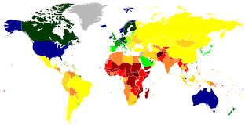
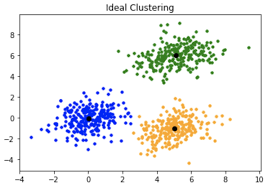

This project, created for the Ministry of Sport, uses AI and YOLO to detect horses and riders in British jumping competitions. With real-time object recognition and Streamlit visualisation, it ensures precision and safety in the sport.

Hotel Reservation Prediction Model Developed a predictive model for hotel reservations with exceptional recall and precision. This project demonstrates effective use of machine learning algorithms to forecast booking patterns and optimize decision-making processes in the hospitality industry.

I recently completed a machine learning project focused on predicting the growth of various countries using data-driven insights. My analysis leveraged correlation between growth predictors and a Quality of Life Index, with several interesting patterns emerging.
I recently completed a project focused on analyzing employment demographics and infrastructure within a specific area to identify gaps and prioritize development needs. Using data-driven insights, this project aimed to answer key questions about the community’s employment status and available facilities, creating a holistic view of the area’s socioeconomic landscape.
I recently completed a project using OpenCV for key image processing tasks: detecting image features, applying blurring to reduce noise, and resizing images dynamically. This project showcased OpenCV's versatility for applications in digital media, security, and machine vision.

I recently completed a project focused on leveraging the K-Means Clustering algorithm to perform unsupervised machine learning tasks. The project aimed to uncover hidden patterns within unlabeled data by grouping similar data points into clusters, making it possible to derive insights without prior labels or classifications.

I developed a binary classification model using the PneumoniaMNIST dataset to detect pneumonia in chest X-ray images. The model was trained on labeled data to distinguish between normal and pneumonia cases, showcasing the power of machine learning in supporting quick, accurate medical diagnoses.